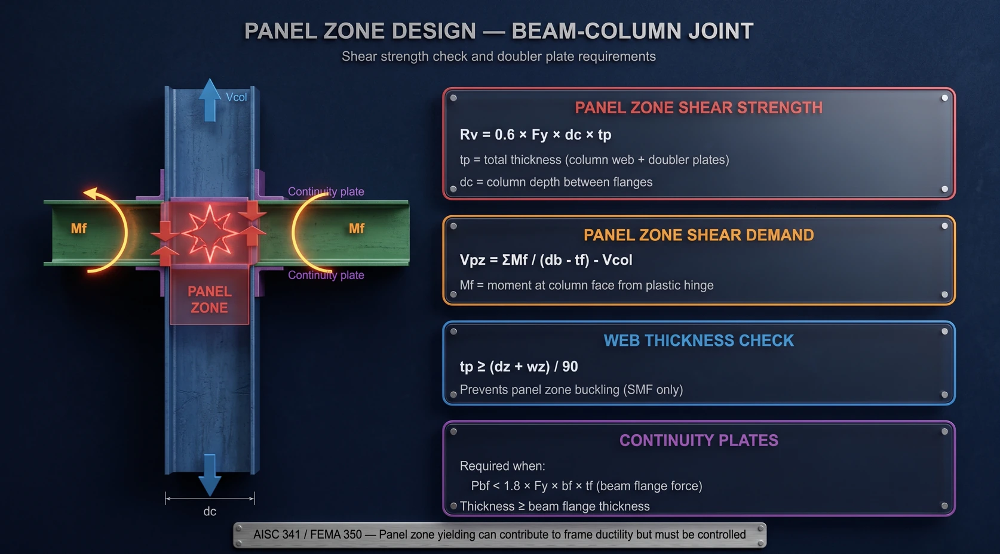
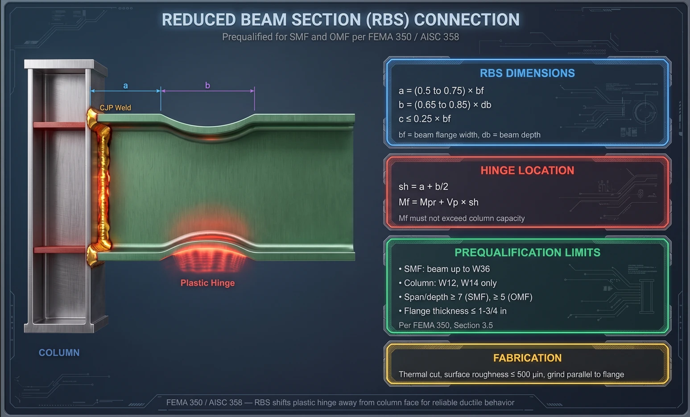
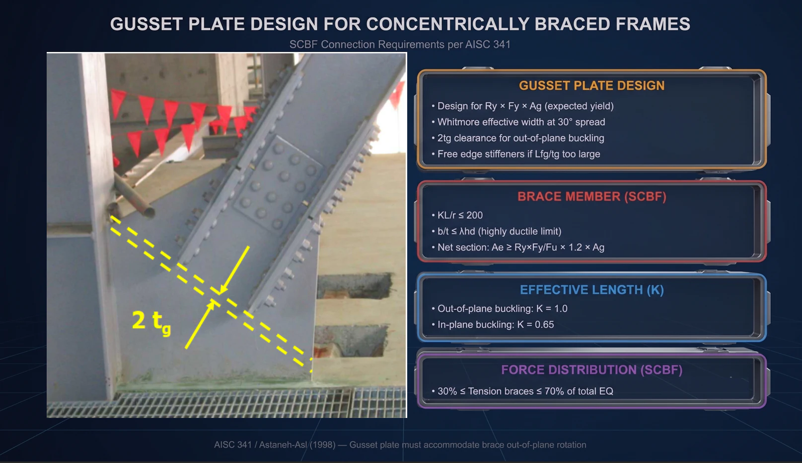
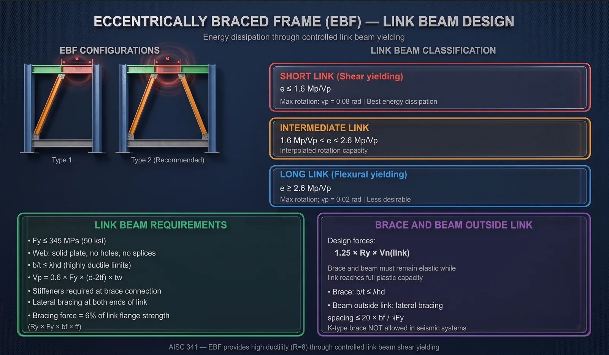
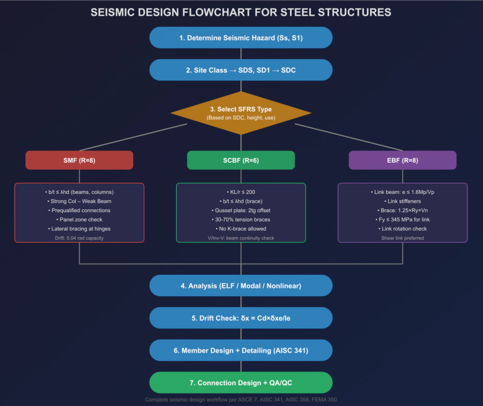

7. SMF — quy trình sáu bước
Special Moment Frame là hệ dẻo nhất và cũng đòi hỏi chi tiết hoá nghiêm ngặt nhất: R = 8 nên lực thiết kế nhỏ nhất, nhưng đổi lại liên kết phải chịu được drift 0,04 rad — biến dạng dẻo rất lớn.
Bước 1 — Chọn tiết diện dầm
- Đủ cường độ cho tổ hợp kháng chấn, nhưng drift thường mới là tiêu chí quyết định.
- Cánh bf/2tf ≤ 0,32·√(E/Fy) và bụng h/tw ≤ 2,57·√(E/Fy) — tức là λhd.
- Zbf ≥ 0,7 × Zb — cánh phải đóng góp đủ khả năng chịu uốn, loại trừ dầm có bụng quá lớn so với cánh.
GIẰNG NGANG cho dầm SMF
Khoảng cách tối đa: Lb ≤ 0,095 × ry × E / Fy
Phải có giằng tại vị trí khớp dẻo dự kiến
Giằng CẢ HAI cánh, trên và dưới
Lực giằng ≥ 2% cường độ cánh (6% khi gần vùng RBS)Bước 2 — Chọn tiết diện cột
- Theo thẩm định của FEMA 350, chỉ dùng W12 và W14.
- b/t ≤ λhd khi ΣM*pc/ΣM*pb < 2,0; ngược lại dùng λmd.
Tổ hợp lực dọc khuếch đại cho cột:
Pu = 1,0D + 0,5L + Ω₀ × QE (nén)
Pu = 0,9D − Ω₀ × QE (kéo)
Không cần lớn hơn lực truyền từ 1,25 × khả năng cực hạn
của dầm hoặc giằng kề bên.
NGOẠI LỆ: nếu fa < 0,3·Fy dưới tổ hợp kháng chấn thì
không cần kiểm tra lực dọc khuếch đại.Bước 3 — Kiểm tra cột mạnh – dầm yếu
ΣM*pc / ΣM*pb ≥ 1,0
CỘT: M*pc = Zc × (Fyc − Puc/Ag)
Zc = mô-đun dẻo cột
Puc = lực dọc trong cột dưới tổ hợp kháng chấn
Cộng cho cả cột trên và cột dưới tại nút
DẦM: M*pb = Mpr + Vp × sh
Mpr = Cpr × Ry × Fy × Ze
Vp = lực cắt tại khớp dẻo (tải trọng + 2·Mpr/L')
sh = khoảng cách từ mặt cột đến khớp dẻo
Cộng cho dầm trái và dầm phải tại nútBước 4 — Thiết kế panel zone
Panel zone là vùng bụng cột ngay tại nút. Khi dầm hai bên có mô-men ngược chiều, vùng này chịu lực cắt rất lớn — dễ bị bỏ sót vì nó không phải một cấu kiện riêng.

Lực cắt trong panel zone:
Vpz = ΣMf / (db − tbf) − Vcol
Cường độ cắt (AISC 360 §J10.6):
φRn = 0,60 × Fy × dc × tp × [ 1 + 3·bcf·tcf² / (db·dc·tp) ]
tp = tổng chiều dày bụng cột + doubler plate
dc = chiều cao cột giữa hai cánh
bcf, tcf = bề rộng và chiều dày cánh cột
Chống mất ổn định bụng (riêng SMF):
tp ≥ (dz + wz) / 90Bước 5 và 6 — Bản liên tục và nối cột
- Bản liên tục cần khi lực tập trung từ cánh dầm vượt khả năng cánh cột — cụ thể khi Pbf > 1,8 × Fy × bf,cột × tf,cột.
- Với SMF, chiều dày bản liên tục ≥ chiều dày cánh dầm. Hàn CJP vào cánh cột, hàn góc vào bụng cột, xuyên qua toàn bộ bề rộng cánh cột.
- Nối cột đặt ở giữa 1/3 chiều cao tầng và cách mặt trên dầm ít nhất 1,0 m. Phải chịu được lực kéo do mô-men lật, cường độ cắt ≥ cột tầng trên, cường độ uốn ≥ 50% khả năng uốn cột tầng trên.
8. Liên kết dầm–cột kháng chấn
Sau Northridge, FEMA 350 và AISC 358 xây dựng hệ thống liên kết đã thẩm định — những loại đã qua thí nghiệm nên được phép dùng mà không cần thử nghiệm thêm. Đây là thay đổi lớn nhất về mặt thực hành.
| Loại liên kết | Ký hiệu | Hệ cho phép | Đặc điểm |
|---|---|---|---|
| Cánh hàn – bụng bu-lông | WUF-B | OMF | Đơn giản nhất |
| Cánh hàn – bụng hàn | WUF-W | OMF, SMF | Hàn toàn bộ |
| Tiết diện dầm thu nhỏ | RBS | OMF, SMF | Phổ biến nhất |
| End plate không gia cường | BUEP | OMF, SMF | End plate mỏng |
| End plate có gia cường | BSEP | OMF, SMF | Cho dầm lớn |
| Bản cánh bu-lông | BFP | OMF, SMF | Bản nối bu-lông |
| Bản cánh hàn | WFP | OMF, SMF | Bản cánh bổ sung |
RBS — loại phổ biến nhất, thiết kế sáu bước
Nguyên lý rất trực tiếp: cắt bớt cánh dầm ở gần cột để giảm cường độ cục bộ, buộc khớp dẻo hình thành tại vùng cắt thay vì tại mặt cột. Chính là hiện thực hoá bài học lớn nhất của Northridge.

1. Kích thước vùng cắt
a = (0,50 ~ 0,75) × bf khoảng cách từ mặt cột đến đầu vùng cắt
b = (0,65 ~ 0,85) × db chiều dài vùng cắt
c ≤ 0,25 × bf chiều sâu cắt mỗi bên
2. Mô-đun dẻo tại vùng cắt
ZRBS = Zb − 2 × c × tbf × (db − tbf)
3. Mô-men tại khớp dẻo
Mpr = Cpr × Ry × Fy × ZRBS với Cpr = 1,1
4. Lực cắt tại khớp dẻo
Vp = 2·Mpr / L' + Vtĩnh tải L' = L − 2·sh
5. Mô-men tại mặt cột
Mf = Mpr + Vp × sh sh = a + b/2
6. Kiểm tra
Mf ≤ φd × Ry × Fy × Zb (dầm không chảy tại mặt cột)
Cột mạnh – dầm yếu, dùng M*pb = Mf
Panel zone, dùng Mf| Giới hạn thẩm định | SMF | OMF |
|---|---|---|
| Chiều cao dầm tối đa | W36 | W36 |
| Chiều dày cánh tối đa | 44 mm | 44 mm |
| Cột | W12, W14 | Không giới hạn |
| Tỷ số nhịp/chiều cao tối thiểu | 7 | 5 |
Liên kết end plate — phù hợp pipe rack
- BUEP 4 bu-lông không gia cường: dầm ≤ W30 cho OMF, ≤ W24 cho SMF. End plate thép A36, bu-lông A325 hoặc A490 siết trước.
- BSEP 8 bu-lông có gia cường: cho dầm lớn hơn, có bản gia cường tại cánh trên và dưới, end plate dày hơn.
- Khoảng cách khớp dẻo: sh = dc/2 + tpl + db/3.
9. SCBF — thiết kế gusset plate
Trong khung giằng đồng tâm, thanh giằng chịu kéo chảy dẻo còn thanh giằng chịu nén mất ổn định — cả hai đều hấp thụ năng lượng. Sau khi mất ổn định, thanh nén mất cường độ và lực được tái phân bố.
| Thông số thanh giằng | Yêu cầu |
|---|---|
| Độ mảnh KL/r | ≤ 200 |
| b/t cánh và bụng | ≤ λhd |
| K ngoài mặt phẳng | 1,0 |
| K trong mặt phẳng | 0,65 |
| Phân bố lực kéo | 30% đến 70% tổng lực ngang |

Bản nối là phần tử quan trọng nhất trong liên kết giằng. Thiết kế sai thì cả hệ mất khả năng kháng chấn, dù thanh giằng có đúng đến đâu.
NGUYÊN TẮC 1 — Cường độ thiết kế theo cường độ KỲ VỌNG của giằng
Pu = Ry × Fy × Ag
NGUYÊN TẮC 2 — Vùng Whitmore
Góc lan 30° từ mỗi bên liên kết
Lw = 2 × Lconn × tan(30°) + wgiằng
NGUYÊN TẮC 3 — Khoảng hở 2tg (đặc trưng của SCBF)
Đầu thanh giằng cách mép bản nối ít nhất 2 × tg
Khoảng hở này cho bản nối UỐN DẺO khi giằng mất ổn định
ngoài mặt phẳng. Không có nó, bản nối gãy giòn.
NGUYÊN TẮC 4 — Gia cường mép tự do (Astaneh-Asl 1998)
Lfg = 0,75 × tg × √(E / Fy)
Mép tự do dài hơn giá trị này phải hàn bản gia cường đứng.
NGUYÊN TẮC 5 — Mặt cắt thực (liên kết bu-lông)
Ae ≥ (Ry × Fy / Fu) × 1,2 × AgCấu hình V và chữ V ngược — yêu cầu riêng
- Dầm phải liên tục giữa hai cột, không được cắt tại điểm nối giằng.
- Dầm phải chịu được tải D + L khi không có thanh giằng — tức là giả thiết giằng đã hỏng.
- Kiểm tra lực mất cân bằng: giằng kéo chảy dẻo ở Ry·Fy·Ag trong khi giằng nén chỉ còn 0,3·Pn — chênh lệch đó tác dụng lên dầm.
- Giằng ngang tại cả hai cánh dầm ở điểm nối giằng, lực giằng ≥ 2% cường độ cánh.
10. EBF — thiết kế link beam
EBF gộp được ưu điểm của cả hai họ: thanh giằng cho độ cứng của khung giằng, còn link beam cho độ dẻo của khung mô-men. Link được thiết kế như một cầu chì có kiểm soát.

BƯỚC 1 — Chiều dài link
Vp = 0,6 × Fy × (d − 2tf) × tw
Mp = Fy × Zx
Link cắt (tốt nhất): e ≤ 1,6 × Mp/Vp γp = 0,08 rad
Trung gian : 1,6 < e·Vp/Mp < 2,6 nội suy
Link uốn (kém nhất): e ≥ 2,6 × Mp/Vp γp = 0,02 rad
BƯỚC 2 — Tiết diện link
Vật liệu Fy ≤ 345 MPa
Bụng phải là tấm ĐƠN: không doubler, không khoan lỗ, không nối
b/t cánh và bụng ≤ λhd
BƯỚC 3 — Góc xoay link
γp = (L/e) × θ θ = Cd × θe / IeBước 4 — Sườn gia cường trong link
- Sườn suốt chiều cao bụng tại cả hai đầu link, nơi nối với thanh giằng.
- Sườn trung gian với link cắt (e ≤ 1,6·Mp/Vp): khoảng cách ≤ 30·tw − d/5.
- Với 1,6 < e·Vp/Mp ≤ 2,6: khoảng cách ≤ 52·tw − d/5.
- Với e > 2,6·Mp/Vp: không cần sườn trung gian.
- Chiều dày sườn ≥ 10 mm hoặc bằng tw, lấy giá trị lớn hơn.
THANH GIẰNG VÀ DẦM NGOÀI LINK — phần tử được bảo vệ
Lực thiết kế = 1,25 × Ry × Vn(link)
Giằng : b/t ≤ λhd
Dầm ngoài : giằng ngang khoảng cách ≤ 20·bf/√Fy| Cấu hình EBF | Đánh giá |
|---|---|
| D-brace — một giằng, link ở đầu | Đơn giản, ít yêu cầu cho liên kết dầm–cột |
| V-brace — hai giằng, link ở giữa | Khuyến nghị — cân đối nhất |
| K-brace | CẤM — không dùng trong EBF |
11. OMF — khi nào đủ dùng
OMF dùng cho SDC A, B, C. R = 3,5 nên lực thiết kế lớn hơn SMF, nhưng đổi lại chi tiết hoá đơn giản hơn rất nhiều. Với phần lớn công trình công nghiệp ở vùng động đất yếu, đây mới là lựa chọn hợp lý.
| Yêu cầu | SMF | OMF |
|---|---|---|
| Cột mạnh – dầm yếu | Bắt buộc | Không yêu cầu |
| Giới hạn b/t | λhd | λp (compact) |
| Giằng ngang | 0,095·ry·E/Fy | 0,17·ry·E/Fy |
| Liên kết | Thẩm định theo AISC 358 | Chỉ cần đạt 0,02 rad |
| Mất ổn định panel zone | Phải kiểm tra | Không yêu cầu |
| Nối cột | CJP, 50% Mpn | Đơn giản hơn |
Mô-men thiết kế tại liên kết:
Mf = min( 1,1 × Ry × Mp , mô-men từ tổ hợp khuếch đại )
Lực cắt thiết kế:
Vu = min( 2 × 1,1 × Ry × Mp / Ln + V(1,2D+0,5L) ,
Vu từ tổ hợp khuếch đại )12. Áp dụng cho Việt Nam
- Phần lớn kết cấu thép công nghiệp tại Việt Nam chưa được thiết kế kháng chấn đúng cách.
- TCVN 9386:2012 chưa được áp dụng rộng rãi cho kết cấu thép.
- Dự án FDI yêu cầu AISC/ASCE nhưng kỹ sư còn thiếu kinh nghiệm kháng chấn.
- Capacity design và liên kết thẩm định vẫn là khái niệm rất mới.
| Vùng | agR (g) | SDC ước tính | Hệ khuyến nghị |
|---|---|---|---|
| Rất yếu | < 0,04 | A | Không cần kháng chấn đặc biệt |
| Yếu | 0,04 – 0,08 | B | OMF hoặc OCBF |
| Trung bình | 0,08 – 0,12 | C | IMF, SCBF hoặc EBF |
| Cao | > 0,12 | D | SMF, SCBF, EBF, BRBF |
Khuyến nghị theo loại công trình
| Loại công trình | Hệ và liên kết nên dùng |
|---|---|
| Nhà xưởng 1–2 tầng | OMF hoặc OCBF là đủ ở phần lớn vùng. Liên kết BUEP hoặc WUF-B. Chi tiết hoá đơn giản, kinh tế. |
| Pipe rack / kết cấu module | Kết cấu không gian, không có sàn cứng. OCBF phổ biến nhất, liên kết end plate. Lưu ý: OMF cho pipe rack rất khó đặt giằng ngang nên nên xem xét SCBF. |
| Nhà thép trên 5 tầng | Vùng agR > 0,08g phải dùng IMF hoặc SMF. Cân nhắc hệ kép (SMF + SCBF) để có cả cứng lẫn dẻo. Liên kết RBS khuyến nghị cho SMF. |
| Thép tạo hình nguội | AISC 341 không áp dụng. Dùng AISI S400. |

13. Checklist thiết kế kháng chấn
- Xác định Ss, S1 (hoặc agR) từ bản đồ USGS / TCVN — ASCE 7 Ch.11.
- Phân loại nền đất Site Class A–F — ASCE 7 Ch.20.
- Tính SDS, SD1 và xác định SDC — ASCE 7 Ch.11.
- Chọn hệ SFRS cùng R, Ω₀, Cd — ASCE 7 Bảng 12.2-1.
- Tính lực cắt đáy V = Cs × W — ASCE 7 §12.8.
- Phân tích kết cấu bằng ELF hoặc modal — ASCE 7 §12.8–12.9.
- Kiểm tra drift δx = Cd × δxe / Ie — ASCE 7 §12.12.
- Chọn tiết diện đạt b/t ≤ λhd / λmd / λp — AISC 341 Bảng D1.1.
- Kiểm tra cột mạnh – dầm yếu ΣM*pc ≥ ΣM*pb — AISC 341 §E3.4a.
- Tính Mpr = Cpr × Ry × Fy × Ze — AISC 341 / FEMA 350.
- Kiểm tra panel zone φRn ≥ Vpz — AISC 360 §J10.6.
- Bố trí bản liên tục — AISC 341 §E3.6f.
- Chọn loại liên kết đã thẩm định — AISC 358; thiết kế chi tiết theo FEMA 350 Ch.3.
- Thiết kế nối cột: hàn CJP, đúng vị trí, đủ cường độ — AISC 341 §D2.5.
- Với CBF: kiểm gusset plate — khoảng hở 2tg, Whitmore, Lfg — AISC 341 §F2.
- Với EBF: kiểm link beam — e, γp, sườn gia cường — AISC 341 §F3.
- Đánh dấu vùng bảo vệ, không gắn phụ kiện vào đó — AISC 341 §I2.
- Mối hàn demand-critical đạt yêu cầu CVN — AISC 341 §A3.4.
- Kế hoạch QA/QC cho kiểm tra hàn và bu-lông — FEMA 353.
14. Ba điều đọng lại
Thiết kế kháng chấn không chỉ là tính lực rồi kiểm tra tiết diện. Nó là một triết lý: chọn trước nơi cho phép hư hại, rồi bảo vệ toàn bộ phần còn lại.
- Capacity design — luôn thiết kế phần tử được bảo vệ mạnh hơn cường độ kỳ vọng của fuse, không phải mạnh hơn giá trị danh nghĩa.
- Chi tiết quyết định sống còn — liên kết, mối hàn, gusset plate mới là thứ quyết định kết cấu có hoạt động đúng như thiết kế hay không. Northridge sụp đổ ở chi tiết, không ở tính toán.
- Phù hợp mới là tối ưu — không phải lúc nào cũng cần SMF. Với vùng động đất yếu như phần lớn Việt Nam, OMF hay OCBF vừa đủ an toàn vừa kinh tế.
Tài liệu tham chiếu: FEMA 350 · AISC 341-22 · ASCE 7-22 · AISC 358-22 · TCVN 9386:2012 · Astaneh-Asl (1998) Seismic Behavior and Design of Gusset Plates. Bài viết thuộc series “Hướng dẫn thiết kế kết cấu công trình công nghiệp” — Roberto Structural. Nội dung mang tính hướng dẫn kỹ thuật; kỹ sư chịu trách nhiệm kiểm tra và hiệu chỉnh theo điều kiện cụ thể của từng dự án và tiêu chuẩn áp dụng.